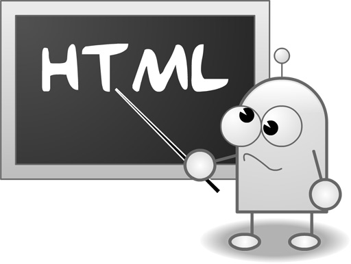

| HOME | ABOUT | GALLERY | SERVICES | CONTACT |
HTML is tag base markup language
In 1980, physicist Tim Berners-Lee, a contractor at CERN, proposed and prototyped ENQUIRE, a system for CERN researchers to use and share documents. In 1989, Berners-Lee wrote a memo proposing an Internet-based hypertext system.
In 1980, physicist Tim Berners-Lee, a contractor at CERN, proposed and prototyped ENQUIRE, a system for CERN researchers to use and share documents. In 1989, Berners-Lee wrote a memo proposing an Internet-based hypertext system.
In 1980, physicist Tim Berners-Lee, a contractor at CERN, proposed and prototyped ENQUIRE, a system for CERN researchers to use and share documents. In 1989, Berners-Lee wrote a memo proposing an Internet-based hypertext system.
©Bitm-web-design-66